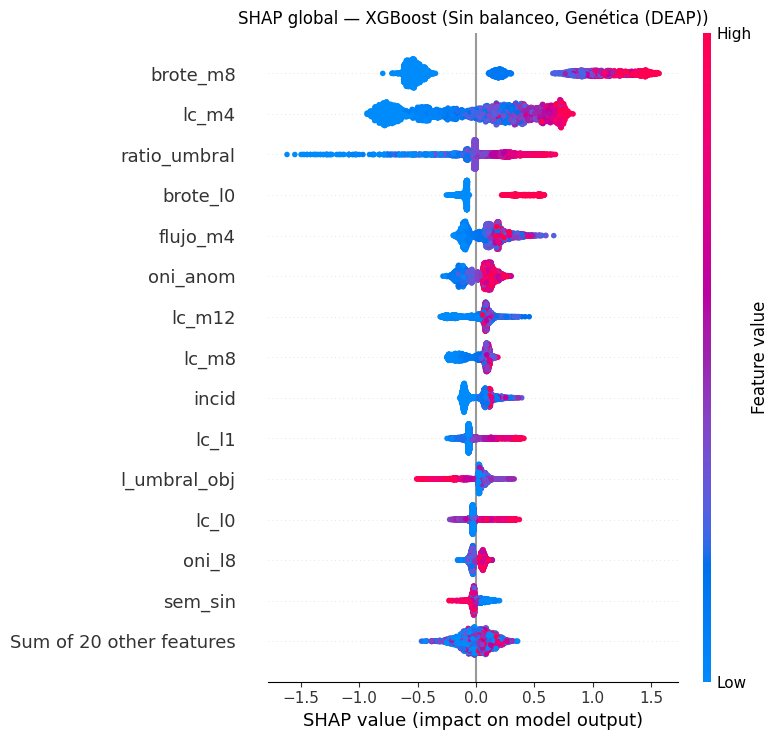
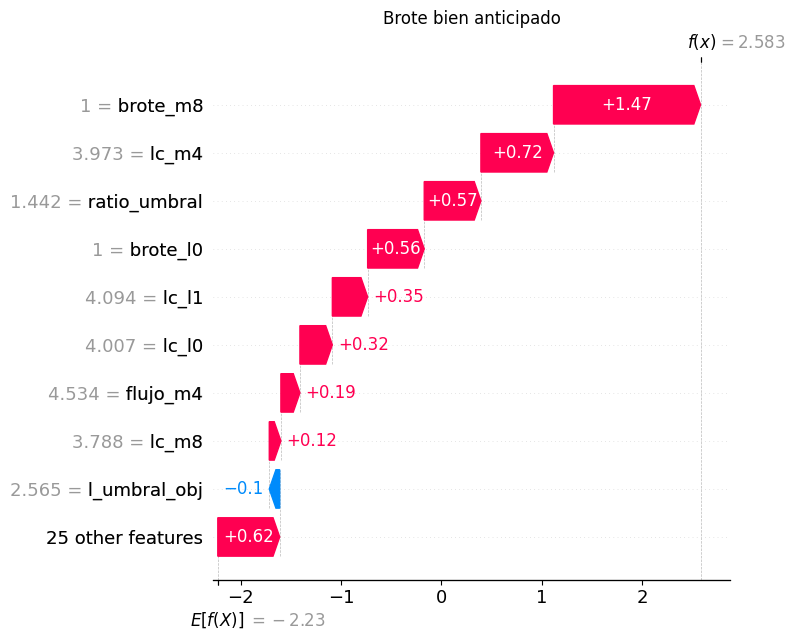
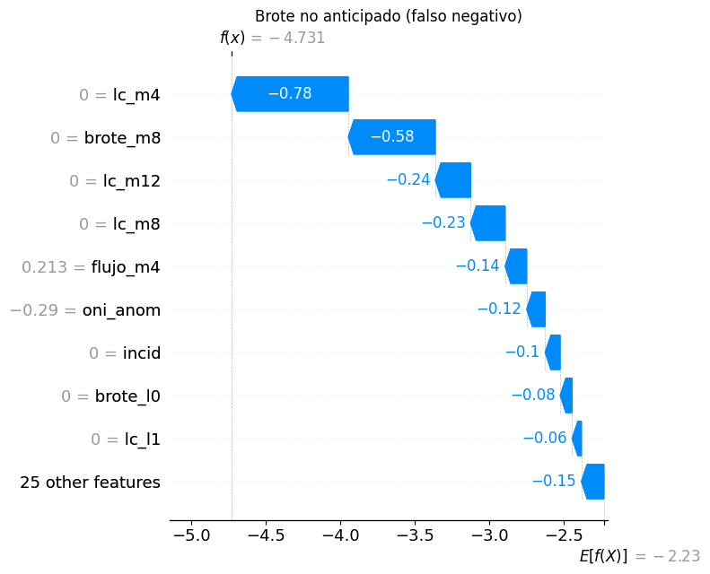
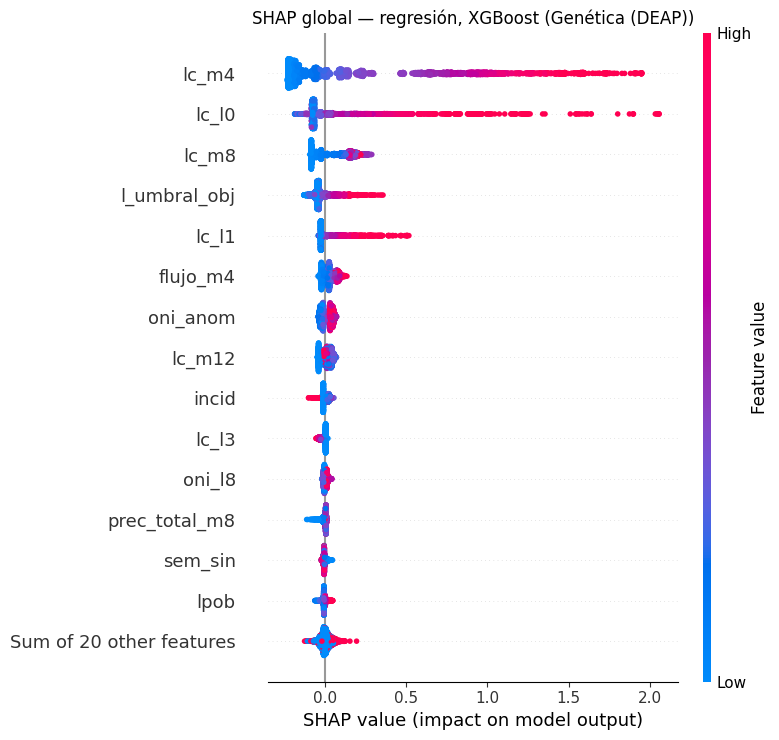
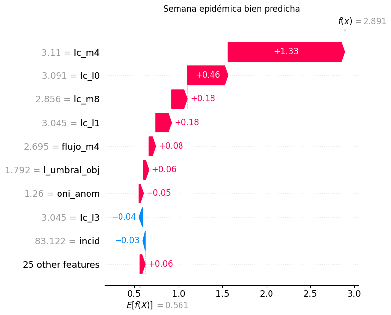
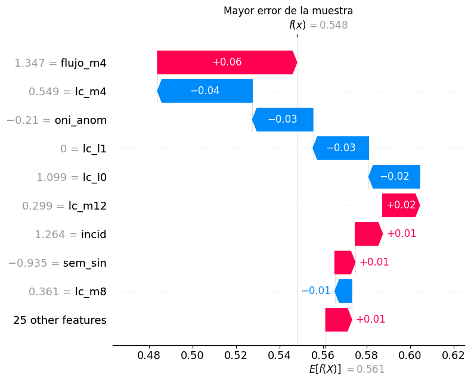

Interpretabilidad: valores de Shapley (SHAP) y LIME#
El valor de Shapley de la variable \(j\) para la fila \(\mathbf x\) es su contribución marginal promedio sobre todos los subconjuntos \(S\) de las demás variables:
Es la única atribución que cumple eficiencia (\(\sum_j \phi_j = f(\mathbf x) - E[f]\)), simetría (variables con igual aporte reciben igual valor), nulidad y aditividad (en un ensamble, los valores son la suma de los de sus árboles). Para modelos de árboles, TreeSHAP los calcula exactamente en tiempo polinomial. En clasificación se expresan en log-odds.
import os # Rutas
import sys # Configuración del intérprete
os.environ.setdefault("LOKY_MAX_CPU_COUNT", str(os.cpu_count())) # Evita un aviso de joblib en Windows
sys.path[:0] = [os.path.abspath(".."), os.path.abspath("../.."), os.path.abspath("../../entregable1")] # e3, src y e1
import warnings # Control de avisos
warnings.filterwarnings("ignore") # Oculta avisos de versiones
import contextlib, io # Silenciar un diagnóstico de joblib en Windows
from joblib.externals.loky import cpu_count # Conteo de núcleos
with contextlib.redirect_stderr(io.StringIO()): # joblib imprime un diagnóstico al no encontrar «wmic»
cpu_count(only_physical_cores=True) # Se calcula una vez (queda en caché)
import pickle # Lectura de resultados
import numpy as np # Cálculo numérico
import pandas as pd # Tablas
import plotly.express as px # Figuras rápidas
import plotly.graph_objects as go # Figuras detalladas
from plotly.subplots import make_subplots # Paneles
from IPython.display import Markdown, display # Texto enriquecido
from e1.figuras import mostrar, AZUL, ROJO, VERDE, AMBAR, GRIS, MORADO # Estilo de figuras (tema claro del informe)
from e3 import config as c3, datos as dd, modelos as mo, optimizadores as op, experimento as ex # Código del entregable
c3.fijar_semilla() # Semilla global (42)
pd.set_option("display.width", 170) # Ancho de las tablas
pd.set_option("display.max_columns", 30) # Columnas visibles
pd.set_option("display.float_format", lambda v: f"{v:,.4f}") # Cuatro decimales
COLORES = {"Grid Search": GRIS, "Random Search": AMBAR, "Bayesiana (Optuna TPE)": AZUL, "Genética (DEAP)": VERDE, "Successive Halving": MORADO} # Color por optimizador
import shap # Valores de Shapley
import matplotlib.pyplot as plt # Gráficos de SHAP
from e3 import interpretabilidad as it, evaluacion as ev # Interpretabilidad
tabla = pd.read_csv(c3.RESULTADOS / "tabla_maestra.csv") # Tabla maestra
ext = tabla.groupby(["tarea", "modelo", "balanceo", "optimizador"])[["AUC-PR", "RMSE"]].mean().reset_index() # Bucle externo
mejor_clf = ext[ext["tarea"] == "clf"].sort_values("AUC-PR", ascending=False).iloc[0] # Mejor clasificador
mejor_xgb = ext[(ext["tarea"] == "clf") & (ext["modelo"] == "XGBoost")].sort_values("AUC-PR", ascending=False).iloc[0] # Mejor XGBoost (para LIME)
mejor_reg = ext[(ext["tarea"] == "reg") & ext["modelo"].isin(["Random Forest", "XGBoost", "Árbol de decisión"])].sort_values("RMSE").iloc[0] # Mejor regresor de árboles
pd.DataFrame([mejor_clf, mejor_xgb, mejor_reg], index=["mejor clasificador", "mejor XGBoost (clasificación)", "mejor regresor de árboles"])
| tarea | modelo | balanceo | optimizador | AUC-PR | RMSE | |
|---|---|---|---|---|---|---|
| mejor clasificador | clf | XGBoost | Sin balanceo | Genética (DEAP) | 0.6792 | NaN |
| mejor XGBoost (clasificación) | clf | XGBoost | Sin balanceo | Genética (DEAP) | 0.6792 | NaN |
| mejor regresor de árboles | reg | XGBoost | — | Genética (DEAP) | NaN | 0.4808 |
Clasificación: interpretabilidad global#
tr, va, te = dd.cargar() # Periodos
pipe, est, prep = it.reajustar("clf", mejor_clf["modelo"], mejor_clf["balanceo"], mejor_clf["optimizador"]) # Mejor clasificador
muestra = te.sample(3000, random_state=c3.SEMILLA) # Filas de la prueba a explicar
Xp = prep(muestra[dd.X_COLS].to_numpy()) # Espacio en que trabaja el modelo (estandarizado)
sv = it.shap_arbol(est, Xp) # Valores SHAP exactos
sv.data = muestra[dd.X_COLS].to_numpy() # Se muestran los valores originales (no estandarizados) en el eje de color
plt.figure() # Figura nueva
shap.plots.beeswarm(sv, max_display=15, show=False) # Gráfico resumen
plt.title(f"SHAP global — {mejor_clf['modelo']} ({mejor_clf['balanceo']}, {mejor_clf['optimizador']})") # Título
plt.tight_layout() # Ajuste
plt.show() # Muestra
imp = pd.Series(np.abs(sv.values).mean(axis=0), index=dd.X_COLS).sort_values(ascending=False) # Importancia media |SHAP|
imp.head(10).to_frame("media |SHAP| (log-odds)")

| media |SHAP| (log-odds) | |
|---|---|
| brote_m8 | 0.7391 |
| lc_m4 | 0.4600 |
| ratio_umbral | 0.2001 |
| brote_l0 | 0.1962 |
| flujo_m4 | 0.1532 |
| oni_anom | 0.1152 |
| lc_m12 | 0.1129 |
| lc_m8 | 0.1099 |
| incid | 0.1049 |
| lc_l1 | 0.1048 |
Interpretación. El modelo se apoya sobre todo en la historia reciente del brote: la proporción de semanas en brote en las últimas 8 (brote_m8) es, de lejos, la variable con mayor impacto, seguida del log de casos de 4 semanas, los casos frente al umbral objetivo y el brote actual. Después aparecen el flujo de personas y El Niño (oni_anom). En el gráfico de enjambre, los valores altos (rojo) de estas variables empujan hacia el brote. Las variables climáticas locales tienen impactos pequeños, coherente con todo el EDA.
Clasificación: interpretabilidad local#
Dos filas de la prueba: un brote bien anticipado (verdadero positivo con probabilidad alta) y un brote no anticipado (falso negativo con probabilidad baja, el error más costoso).
p = ev.metricas_clf # (solo para recordar la función de métricas)
proba = pipe.predict_proba(muestra[dd.X_COLS].to_numpy())[:, 1] # Probabilidades de la muestra
y_m = muestra["y"].to_numpy() # Objetivo
i_bien = int(np.argmax(np.where(y_m == 1, proba, -1))) # Brote con la probabilidad más alta
i_mal = int(np.argmin(np.where(y_m == 1, proba, 2))) # Brote con la probabilidad más baja
for i, titulo in [(i_bien, "Brote bien anticipado"), (i_mal, "Brote no anticipado (falso negativo)")]: # Dos casos
fila = muestra.iloc[i] # Fila
print(f"{titulo}: {fila['municipio']} ({fila['departamento']}), semana del {fila['week_start'].date()} · probabilidad {proba[i]:.3f} · casos en t: {int(fila['casos_totales'])}")
plt.figure() # Figura
shap.plots.waterfall(sv[i], max_display=10, show=False) # Cascada
plt.title(titulo) # Título
plt.tight_layout() # Ajuste
plt.show() # Muestra
Brote bien anticipado: Floridablanca (Santander), semana del 2023-09-11 · probabilidad 0.930 · casos en t: 54

Brote no anticipado (falso negativo): Arenal (Bolívar), semana del 2023-02-20 · probabilidad 0.009 · casos en t: 0

Interpretación. En el brote bien anticipado (Floridablanca, septiembre de 2023, probabilidad 0,93) casi todas las variables de historia empujan hacia el brote: el municipio ya venía con semanas en brote y casos sobre su umbral. En el brote no anticipado (Arenal, febrero de 2023, probabilidad 0,009) el municipio tenía 0 casos en la semana de la predicción y ninguna semana reciente en brote: todas las variables de historia empujan hacia «no brote». Es un brote que aparece sin señal previa en el propio municipio; solo información externa (vecinos en brote, movilidad) podría anticiparlo, lo que vuelve a apuntar a las variables de vecindad.
XGBoost: SHAP frente a LIME#
LIME perturba la fila, pondera las perturbaciones por cercanía y ajusta una regresión lineal local; sus pesos dependen de la discretización, del tamaño del vecindario y de la muestra aleatoria. SHAP reparte la predicción con una regla axiomática (eficiencia, simetría, aditividad) y, para árboles, es exacto.
pipe_x, est_x, prep_x = it.reajustar("clf", "XGBoost", mejor_xgb["balanceo"], mejor_xgb["optimizador"]) # Mejor XGBoost
Xp_x = prep_x(muestra[dd.X_COLS].to_numpy()) # Muestra transformada
sv_x = it.shap_arbol(est_x, Xp_x) # SHAP
ent_x = prep_x(dd.submuestra(tr, 5000)[dd.X_COLS].to_numpy()) # Datos de referencia para LIME
comparacion = [] # SHAP frente a LIME
for i, nombre in [(i_bien, "brote bien anticipado"), (i_mal, "brote no anticipado")]: # Mismas dos filas
pesos, r2 = it.lime_local(est_x, ent_x, Xp_x[i]) # LIME
pesos["variable"] = pesos["condición"].str.extract(r"([a-z][a-z_0-9]*)")[0] # Variable de cada condición
top_shap = pd.Series(sv_x.values[i], index=dd.X_COLS).abs().sort_values(ascending=False).head(10) # 10 variables con mayor |SHAP|
comun = len(set(top_shap.index) & set(pesos["variable"])) # Coincidencias
display(Markdown(f"**{nombre}** · R² del modelo lineal local de LIME: {r2:.2f} · variables en común entre los 10 principales: {comun} de 10"))
display(pesos.assign(**{"SHAP de la variable": pesos["variable"].map(pd.Series(sv_x.values[i], index=dd.X_COLS))}).round(3)) # Tabla
comparacion.append({"fila": nombre, "R² LIME": r2, "coincidencias top 10": comun})
pd.DataFrame(comparacion)
brote bien anticipado · R² del modelo lineal local de LIME: 0.50 · variables en común entre los 10 principales: 8 de 10
| condición | peso LIME | variable | SHAP de la variable | |
|---|---|---|---|---|
| 0 | brote_m8 > -0.43 | 0.0690 | brote_m8 | 1.4660 |
| 1 | lc_m4 > 0.21 | 0.0510 | lc_m4 | 0.7240 |
| 2 | ratio_umbral > 0.35 | 0.0450 | ratio_umbral | 0.5650 |
| 3 | flujo_m4 > 0.22 | 0.0340 | flujo_m4 | 0.1900 |
| 4 | brote_l0 > -0.34 | 0.0290 | brote_l0 | 0.5640 |
| 5 | l_umbral_obj > 0.54 | -0.0250 | l_umbral_obj | -0.1040 |
| 6 | oni_anom > 0.58 | 0.0250 | oni_anom | 0.0700 |
| 7 | lc_m8 > 0.19 | 0.0210 | lc_m8 | 0.1160 |
| 8 | lc_l1 > 0.14 | 0.0180 | lc_l1 | 0.3520 |
| 9 | oni_l8 > 0.55 | 0.0130 | oni_l8 | 0.0610 |
brote no anticipado · R² del modelo lineal local de LIME: 0.29 · variables en común entre los 10 principales: 7 de 10
| condición | peso LIME | variable | SHAP de la variable | |
|---|---|---|---|---|
| 0 | brote_m8 <= -0.43 | -0.0680 | brote_m8 | -0.5840 |
| 1 | -0.50 < ratio_umbral <= 0.35 | 0.0300 | ratio_umbral | -0.0080 |
| 2 | brote_l0 <= -0.34 | -0.0260 | brote_l0 | -0.0800 |
| 3 | -0.83 < oni_anom <= -0.05 | -0.0160 | oni_anom | -0.1240 |
| 4 | lc_l1 <= -0.61 | -0.0110 | lc_l1 | -0.0620 |
| 5 | -0.64 < flujo_m4 <= -0.36 | -0.0110 | flujo_m4 | -0.1450 |
| 6 | lc_m12 <= -0.67 | 0.0090 | lc_m12 | -0.2370 |
| 7 | l_umbral_obj <= -0.84 | 0.0070 | l_umbral_obj | 0.0220 |
| 8 | lc_l2 <= -0.61 | -0.0070 | lc_l2 | -0.0120 |
| 9 | oni_l8 <= -0.83 | -0.0070 | oni_l8 | -0.0330 |
| fila | R² LIME | coincidencias top 10 | |
|---|---|---|---|
| 0 | brote bien anticipado | 0.5028 | 8 |
| 1 | brote no anticipado | 0.2882 | 7 |
import scipy.stats as ss # Correlación de rangos
rho = [] # Estabilidad de LIME frente a SHAP en 20 filas
for i in range(20): # Filas
pesos, _ = it.lime_local(est_x, ent_x, Xp_x[i], num=34) # Todas las variables
pesos["variable"] = pesos["condición"].str.extract(r"([a-z][a-z_0-9]*)")[0] # Variable
l = pesos.groupby("variable")["peso LIME"].sum().reindex(dd.X_COLS).fillna(0) # Peso por variable
rho.append(ss.spearmanr(np.abs(l), np.abs(sv_x.values[i]))[0]) # Concordancia de importancias
print(f"Correlación de Spearman entre |LIME| y |SHAP| por fila (20 filas): mediana {np.median(rho):.2f}, rango {np.min(rho):.2f} a {np.max(rho):.2f}")
Correlación de Spearman entre |LIME| y |SHAP| por fila (20 filas): mediana 0.69, rango 0.42 a 0.82
Interpretación. LIME y SHAP coinciden mejor en el brote bien anticipado que en el falso negativo (las coincidencias y el R² del modelo lineal local de LIME están en las tablas), y la concordancia general entre las importancias es solo moderada (correlación de rangos por fila en el rango reportado arriba). Las diferencias metodológicas lo explican: LIME discretiza las variables en cuartiles y ajusta una regresión lineal a perturbaciones aleatorias, así que depende del tamaño del vecindario, de la semilla y de la discretización, y no garantiza que sus pesos sumen la predicción; SHAP (TreeSHAP) es exacto para árboles y cumple eficiencia, simetría y aditividad. Divergen más cuando el modelo es muy no lineal alrededor de la fila (como en el falso negativo, en una zona plana de probabilidad casi 0, donde el R² de LIME cae) o cuando hay variables colineales, entre las que LIME reparte el peso de forma inestable.
Regresión: SHAP del mejor regresor de árboles#
pipe_r, est_r, prep_r = it.reajustar("reg", mejor_reg["modelo"], "—", mejor_reg["optimizador"]) # Mejor regresor
Xp_r = prep_r(muestra[dd.X_COLS].to_numpy()) # Muestra transformada
sv_r = it.shap_arbol(est_r, Xp_r, tarea="reg") # SHAP (en escala log(1 + casos))
sv_r.data = muestra[dd.X_COLS].to_numpy() # Valores originales
plt.figure() # Figura
shap.plots.beeswarm(sv_r, max_display=15, show=False) # Resumen
plt.title(f"SHAP global — regresión, {mejor_reg['modelo']} ({mejor_reg['optimizador']})") # Título
plt.tight_layout() # Ajuste
plt.show() # Muestra
pred_r = pipe_r.predict(muestra[dd.X_COLS].to_numpy()) # Predicciones
err = np.abs(muestra["y_reg"].to_numpy() - pred_r) # Error absoluto
for i, titulo in [(int(np.argmin(err + (muestra["y_reg"].to_numpy() < 2) * 10)), "Semana epidémica bien predicha"), (int(np.argmax(err)), "Mayor error de la muestra")]: # Dos casos
fila = muestra.iloc[i] # Fila
print(f"{titulo}: {fila['municipio']}, semana del {fila['week_start'].date()} · observado {fila['y_reg']:.2f} · predicho {pred_r[i]:.2f}")
plt.figure() # Figura
shap.plots.waterfall(sv_r[i], max_display=10, show=False) # Cascada
plt.title(titulo) # Título
plt.tight_layout() # Ajuste
plt.show() # Muestra

Semana epidémica bien predicha: Caloto, semana del 2024-03-18 · observado 2.89 · predicho 2.89

Mayor error de la muestra: Uribia, semana del 2024-10-14 · observado 2.94 · predicho 0.55

Interpretación. En regresión el patrón es el mismo: las medias y rezagos del log de casos dominan, y El Niño y el flujo de personas vienen después. El error más grande de la muestra (Uribia, octubre de 2024) es otra vez un brote súbito: el modelo predice 0,55 (≈ 0,7 casos) y ocurren ≈ 18. La cascada muestra que las variables de historia, bajas en ese momento, arrastran la predicción hacia abajo.